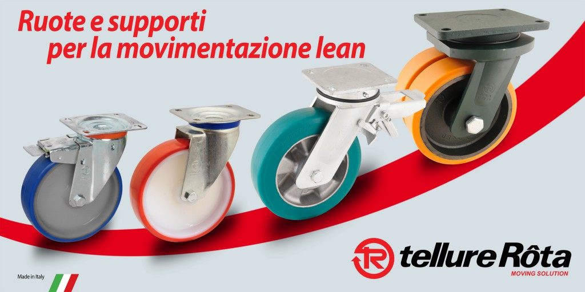

Tellure Rôta è azienda leader in Europa nella progettazione e produzione di ruote e supporti per uso industriale, civile e domestico.
Con 60 anni di esperienza ed utilizzando tecnologie all’avanguardia progetta e produce negli stabilimenti di Formigine, vicino a Modena, ruote e supporti che rispondono alle svariate esigenze di movimentazione di 2.000 clienti in 50 paesi del mondo.
Il Sistema di gestione di Tellure Rôta ha ottenuto in modo integrato le certificazioni di Qualità (ISO 9001:2008), Ambiente (ISO 14001:2004) e Salute e Sicurezza sul lavoro (OHSAS 18001:2007).
L’esperienza di Tellure Rôta nella movimentazione “snella” nasce dall’esperienza diretta: i processi produttivi sono organizzati dal 2007 secondo la logica della “lean production”, che garantisce rapidità ed affidabilità dei tempi di consegna.
Dalle esigenze degli operatori nel nostro stabilimento, abbiamo compreso l’importanza di avere carrelli equipaggiati con ruote che riducessero lo sforzo di chi traina o spinge, e che al contempo fossero adatte sia alla movimentazione manuale che alla movimentazione meccanica.
Su queste basi, i ricercatori di TRLab (laboratorio di ricerca e sviluppo interno all’azienda accreditato alla Rete Alta Tecnologia dell’Emilia-Romagna) hanno sviluppato ruote e supporti innovativi nei materiali e nelle soluzioni costruttive, pensati per le differenti esigenze che possono emergere nell’ambito della movimentazione “lean”.
Sono così nate le ruote in poliuretano elastico TR-Roll, perfette per la movimentazione di carichi pesanti, i prodotti in materiali termoplastici, ideali per la movimentazione di carichi leggeri e medi, le soluzioni specifiche per i carrelli tubolari e per i carrelli dolly, e molti altri prodotti personalizzati creati insieme ai clienti in base alle esigenze specifiche di ogni realtà.
Contatta Tellure Rôta per avere un’offerta personalizzata!

Tellure Rôta S.p.A.
Via Quattro Passi 15
41043 Formigine (MO)
Tel. 059/410300-306 – Fax 059/572859
e-mail: comm.italia@tellurerota.com
web: www.tellurerota.com